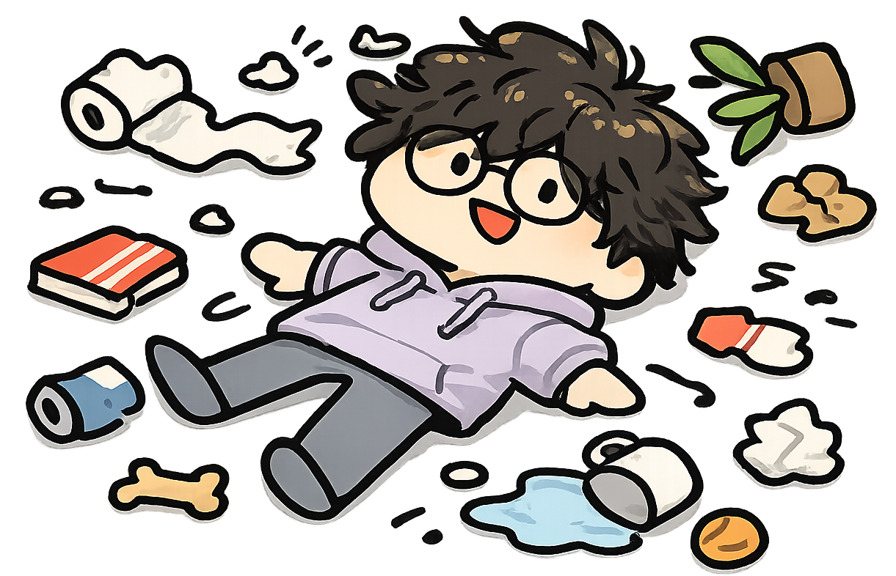
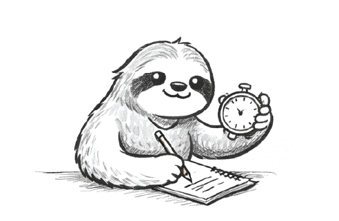

Jun 2025 - Present
PolyFeed Thesis
Feedback analytics and co-design

Student researcher interested in how technology can better support learning, communication, and feedback in real-world settings. I have worked on feedback analytics and co-design research, assistive technology projects involving local AI experimentation, and implementation work with different stakeholders. I am interested in human-centred research that turns real user needs into practical and sustainable tools.
Base
Melbourne / Malaysia
Current Study
Master of Data Science, Monash
Research Focus
Feedback analytics, HCI, co-design
A snapshot of the research, implementation, and project threads shaping my current work. Click each stop or use the panel controls to move through it.
Jun 2025 - Present
PolyFeed Thesis
Feedback analytics and co-design
Mar 2025 - Present
More Than Words
Assistive communication research
Nov 2024 - Present
Action Lab Malaysia
HCI literature and research prep
2024 - Present
Web Development
Frontend systems and dashboards
Professional Experience / Separate Track
A lighter web version of my experience: short impact cards instead of full resume blocks, so the page stays easier to scan.
Maybank / Group Risk / Contract
Maybank / Consumer Financial Services / Contract
ACM Designing Interactive Systems / Academic Service
The page now leans harder into the artifact side of your work: strategy cards, mascot development, and separate media loops for the MATT website and schema-based material.
Thesis Deck / Click a card
Signal Card
These cards now stay in a cleaner fan layout on both desktop and mobile, while the active card lifts without dragging the whole stack out of place.
Mascot Development / Swipe or click

Mascot 01
A more open and welcoming mascot pose that reads clearly as a front-facing character option.
Swipe left or right on mobile.
MATT Website Loop

`MP4` is perfectly fine. Once `media/matt-loop.mp4` exists, this panel will autoplay muted and loop automatically.
Schema Loop Video

A separate loop slot for your schema or dashboard logic, so it is not competing with the MATT website panel.